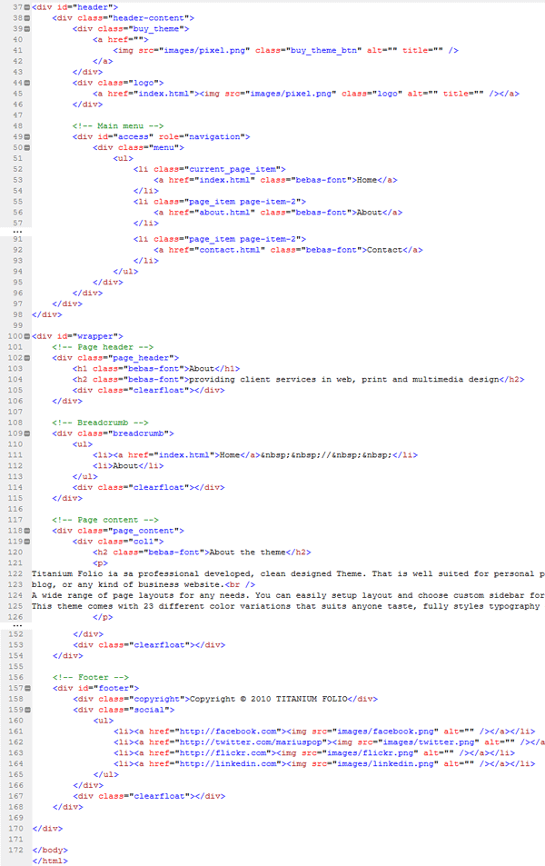
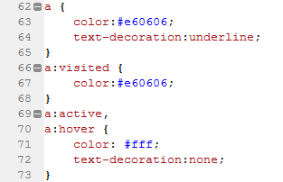

Created: 09/21/2010
By: Marius Pop
Email: marius.pop@gmail.com
Thank you for purchasing my theme. If you have any questions that are beyond the scope of this help file, please feel free to email via my user page contact form here. Thanks so much!
This theme is a fixed layout with custom sidebar. All of the information within the main content area is nested within a div with an id of "#wrapper". The sidebar's content is within a div with a class of ".sidebar_left" or ".sidebar_right". The header content (main menu and logo) is within a div with an id "#header". The general template structure is the same throughout the template. Here is the general structure.
Open style/style#.css (style-0.css to style22.css) if you would like to edit the color, font, background or style of any elements
Here is an example:

<!-- Featured slide 1 --><h1> title and the description*For "slide1" and "slide2" the image size is 615x300px. For "slide3" the image size is 906x300px
If you want to add more featured content, find class "slider-nav", add new pagination item <li><a href="#">4</a></li>
and duplicate one of the <!-- Featured slide 1,2 or 3 -->
This theme use the Piecemaker 3D gallery. Located here: "script/piecemaker"
This theme has 2 sidebars "sidebar_left" and "sidebar_right"
<div class="sidebar_left"> content here... </div> <div class="content_right"> content here... </div>
AND
<div class="content_left"> content here... </div> <div class="sidebar_right"> content here... </div>
<div class="col1"> content here... </div>
Here you can find a detailed example of theme layout
Here you can find a detailed example of theme typography
This theme takes advantage of cufon font replacement for headings and other title elements.
Just add the "bebas-font" class where you need the font to be replaced.
The font used for these elements is called "BebasNeue". It is a free font and is available online.
Download "BebasNeue"
To make contact form work you need to edit "sendmail.php" file. You need to replace the "mail@domain.com" with your email address and "Subject message here" with your subject message.
There are several CSS files included with this theme, but only a few will be necessary for customization. The CSS files are all located in the root theme folder and in the "style" sub-folder.
The style is separated into sections using
/* =Reset default browser CSS. -------------------------------------------------------------- */ some code /* =Fonts -------------------------------------------------------------- */ some code /* =Global Elements -------------------------------------------------------------- */ some code /* Table style -------------------------------------------------------------- */ some code /* Structure -------------------------------------------------------------- */ some code etc, etc.
Each color style is controlled by a custom CSS file. These are located in the "style" folder. To create a custom skin, duplicate on of the existing style#.css files and edit it to match the desired styles. You can easily output the custom graphics for you skin using the .PSD files in "Design" folder.
You can create a custom skin in a few minutes by modifying the background colors of the main shape layers of the supplied files. If you want to get more detailed and tweak the output you can edit the individual highlights and shadow features of the layers above the backgrounds. Play with the different layers to see what effect they have. The file was designed to allow easy and fast skinning.
The best way to go about creating your own skin, is by starting from one of the pre-made styles that come with the theme. An easy way to do this would be as follows:
This theme imports several Javascript files. All located in the "script" folder.
Several design files are included with this theme:
These files are included on every page. <?php include("header.php"); ?>
This code is used to change the style:
<?php if(!empty($_COOKIE['style'])) $style = $_COOKIE['style']; else $style = '-0'; $path = $_SERVER['PHP_SELF']; $page = basename($path); $page = basename($path, '.php'); ?>
If the current page is "About" then the "about" link is highlited in the main menu.
<?php if($page == 'about') echo 'current_page_item'; ?>
The following images, icons or other files have been used in this theme.
Once again, thank you so much for purchasing this theme. As I said at the beginning, I'd be glad to help you if you have any questions relating to this theme. No guarantees, but I'll do my best to assist. If you have a more general question relating to the themes on ThemeForest, you might consider visiting the forums and asking your question in the "Item Discussion" section.
Marius Pop